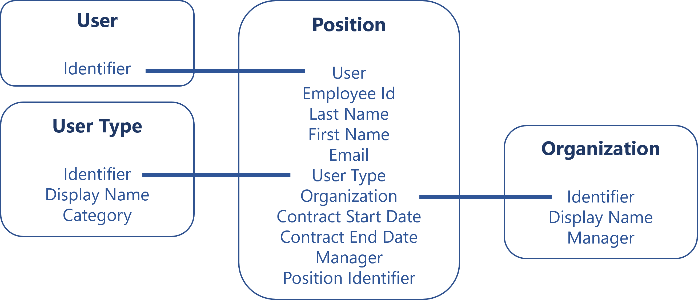
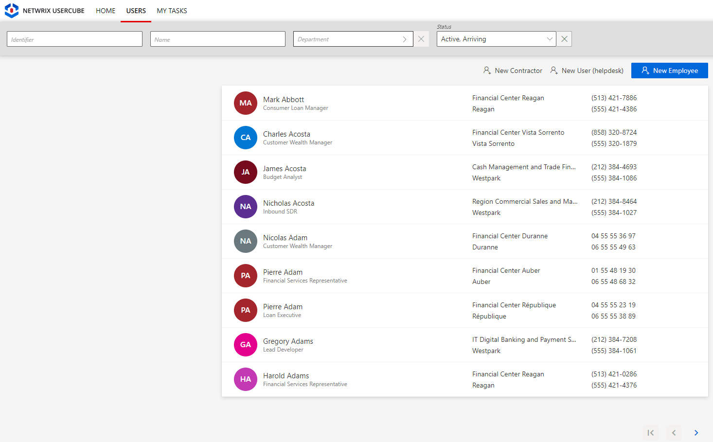
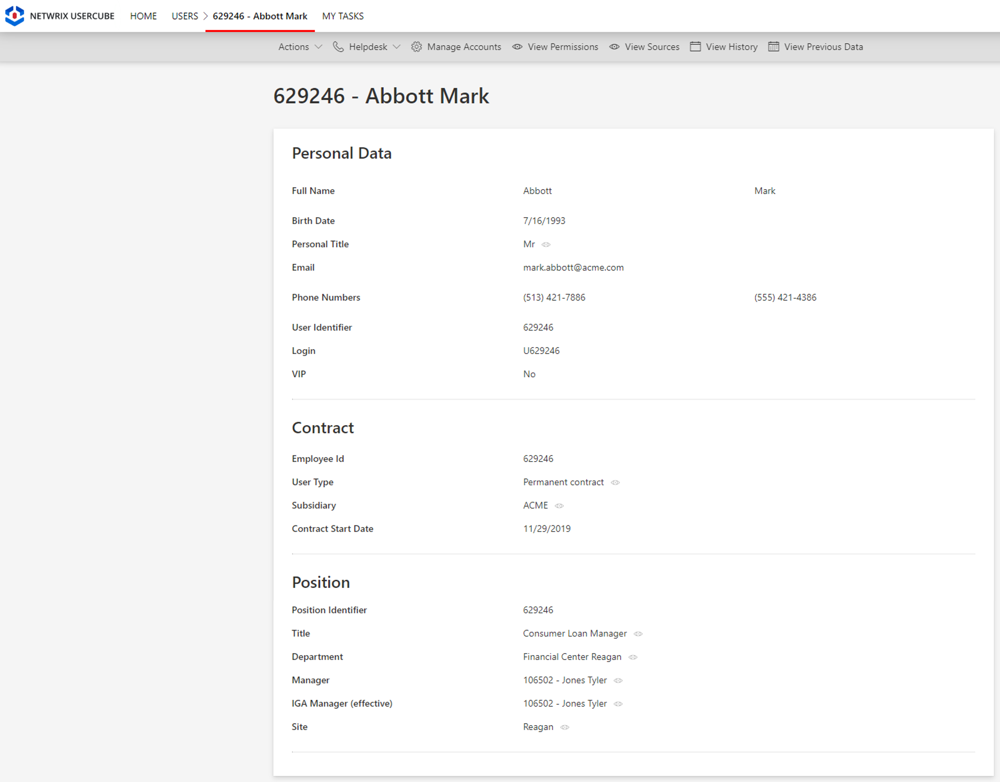

Create the Workforce Repository
How to initiate the repository for workforce identities by loading identities into Identity Manager with the right attributes.
Overview
Loading the digital identities into Identity Manager is the very first task you have to perform, once you installed the development environment.
The identity repository is supposed to contain the list of all kinds of identities in the company. Each identity will be represented by a set of properties that are to be used in the calculations for entitlement assignments.
For example, a user can be represented by an identifier and linked to their position which includes the user's employee id, last name and first name, email, user type, organization, etc.

In Identity Manager, the identity repository can look like the following:


See the Identity Repository topic for additional information..
The initial workforce repository is going to be the first version of a comprehensive repository containing all users in the organization. This repository is crucial in setting up the identity lifecycle management features and managing assignments of entitlements.
Creation strategy for the workforce repository
In a nutshell, Identity Manager has made it as easy as a copy-paste from employee and contractor HR files into an MS Excel file.
Special properties generation
First, you have to choose rules about how email, login, and internal identifiers are going to be built for new identities, and for existing identities who do not have these unique properties yet.
Organizational model creation
Then, you are going to need a model of the organization's structure where the identities fit in. This model is supposed to provide valuable information for automation and governance features later.
The model is where you are going to identify for example the type of identities you want to manage (such as employees and contractors), the hierarchical relationships between them, the geographical areas they work in, and so on.
Identity Manager has already built a template model for you, in the form of an Excel file. This basic model is customizable and will be adaptable to most organizations. You can customize it simply by writing information from your organization into said Excel file.
Even if you have more specific or exotic needs that aren't met by this model, it is still a good starting point and a good way to quickly start delivering value. We recommend that you start building your project using this model, identify its limits along the way, and enhance it down the road to make it fit your needs more accurately.
Organizational model filling
Then, you write down the actual identities information, still using the same Excel file, using data from HR extractions or other records of contractors and temporary workers. As simple as a copy-paste.
The data you are going to load is analyzed by the engine and some simplifications will be suggested.
HR synchronization is not enough:
Another way of handling a part of the initial data loading is to set up an automated synchronization of HR data with Identity Manager.
While it seems to be a good idea, it poses a few problems. Among them:
- a specific IT infrastructure is required and its implementation is likely to delay the project's progress;
- HR data usually misses crucial information (for example contractor data) and is rarely up to date early enough to be really useful.
Hence, in order to rather focus on awaited IGA activities, we choose to build the first iteration of the project upon a manual data upload to create the initial workforce repository.
.
Participants and Artifacts
Integrators may need the help of the HR department and its assistants who know the organization in order to get the identity and organizational data. After the initial loading, the HR department can review the data to confirm its accuracy.
| Input | Output |
|---|---|
| Identity Manager Server (required) Organizational chart (required)) HR data (required) Third-party staff data (optional) |
Initial workforce repository |
Create the Workforce Repository
Create the workforce repository by proceeding as follows:
- Configure Unique Property Generation for all users, pre-existing and new, who do not have them yet.
- Load Identities to Identity Manager to Identity Manager based on the recommended attributes from the provided organizational model Template Description.
- Adjust the Workforce Data Model following Identity Manager's suggestions.
- Continue with the next steps of this guide, and come back later to fill the organizational model with additional data.
Next Steps
Once the initial identities are loaded, integrators can start the User Profile configuration. See the Configure a User Profile topic for additional information.
From there you will be able to keep your repository up to date:
- concerning identity data through workflows;
- concerning the data model
The initial identities loading also enables:
- HR connector creation.